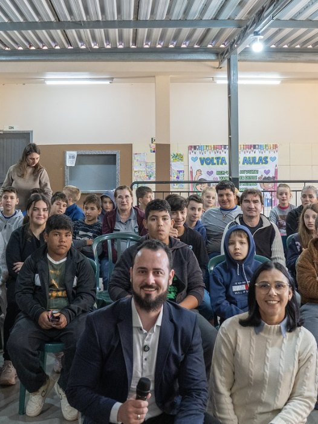
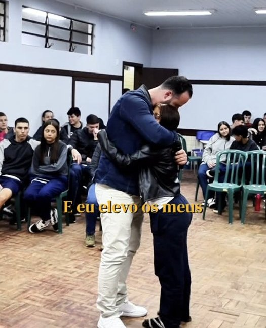
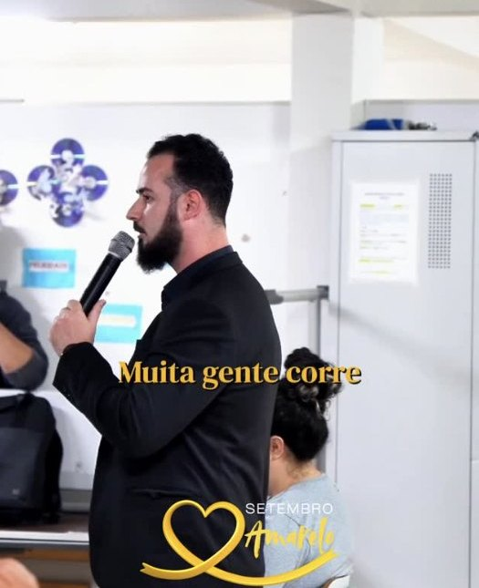
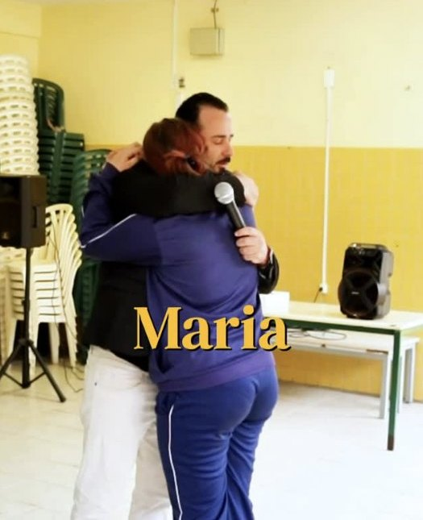

Valorização da vida
O tema central: sentido, propósito e o valor de cada história. Por que vale a pena continuar.
Prevenção e saúde mental para escolas, instituições e empresas
Uma conversa honesta sobre drogas, saúde mental, prevenção ao suicídio e família — com histórias reais e dinâmicas que fazem cada aluno se sentir visto.


Setembro Amarelo o ano inteiro
Instituições que já receberam a palestra
Com apoio de Unioeste e do projeto Laços que Transformam
Por que levar esta palestra
Muitos jovens carregam dores que ninguém vê: pressão, solidão, conflitos em casa, a primeira oferta de droga. A palestra abre espaço para falar disso sem julgamento, com linguagem próxima e exemplos reais.
O objetivo é simples: fortalecer a prevenção e provocar uma reflexão mais profunda sobre as escolhas — para que cada aluno saia sabendo que a vida dele importa e que pedir ajuda é um ato de coragem.
Temas
Os temas podem ser combinados ou aprofundados conforme a necessidade da sua instituição.
O tema central: sentido, propósito e o valor de cada história. Por que vale a pena continuar.
O que acontece por trás da “primeira vez”, as consequências reais e como dizer não sem perder o grupo.
Ansiedade, tristeza e pressão: como reconhecer os sinais em si e nos outros e onde buscar apoio.
Abordagem cuidadosa e acolhedora, alinhada ao Setembro Amarelo, com foco em esperança e rede de apoio.
Gratidão, perdão e reconexão. Um dos momentos mais marcantes para alunos — e para os pais.
Disciplina, responsabilidade e as decisões de hoje que constroem quem a gente vai ser amanhã.
Para quem

A experiência
Uma atividade que quebra o gelo, aproxima a turma e prepara o ambiente para ouvir.
Exemplos concretos que geram identificação — sem sermão e sem discurso decorado.
Perguntas que levam cada um a olhar para as próprias escolhas e relações.
Um fechamento emocionante, com acolhimento — o abraço que os alunos levam para casa.
Como agendar
Conte qual é a instituição, a cidade e o público.
Tema, faixa etária, duração e realidade da turma.
Confirmamos dia, horário, local e equipamento de som.
Arte personalizada com data e local para a comunidade escolar.
O que fica depois
Veja mais reações no Instagram“Minha filha teve a oportunidade de assistir a palestra, ela amou, chegou em casa contando e não esqueceu do abraço.”

Galeria
Quem fala
Palestrante, hipnoterapeuta e estudante de Psicologia. Trabalha com desenvolvimento pessoal e saúde emocional, atendendo em consultório presencial e on-line e formando novos profissionais em hipnoterapia.
Nas escolas, leva essa experiência para uma conversa direta com jovens e famílias: menos teoria, mais presença. Cada palestra é pensada para a realidade de quem está ali.
Dúvidas frequentes
Principalmente para o Ensino Fundamental II, Ensino Médio e EJA. O conteúdo e a linguagem são ajustados à idade — também há versão para adultos, pais e empresas.
A duração é combinada com a instituição para encaixar na grade de horários. Conversamos sobre isso no primeiro contato.
Toledo, Cascavel e região oeste do Paraná. Outras cidades sob consulta.
Sim. A abordagem é acolhedora, focada em esperança, sinais de alerta e rede de apoio, sem detalhes que possam fazer mal. O alinhamento prévio com a equipe pedagógica faz parte do processo.
Um espaço para o público (pátio, auditório ou sala) e, para grupos maiores, caixa de som com microfone. O restante combinamos pelo WhatsApp.
Depende do formato, do público e da cidade. Chame no WhatsApp para receber uma proposta.
Agende
Preencha os campos e a mensagem chega pronta no WhatsApp. Leva menos de um minuto.
Falar direto no WhatsApp